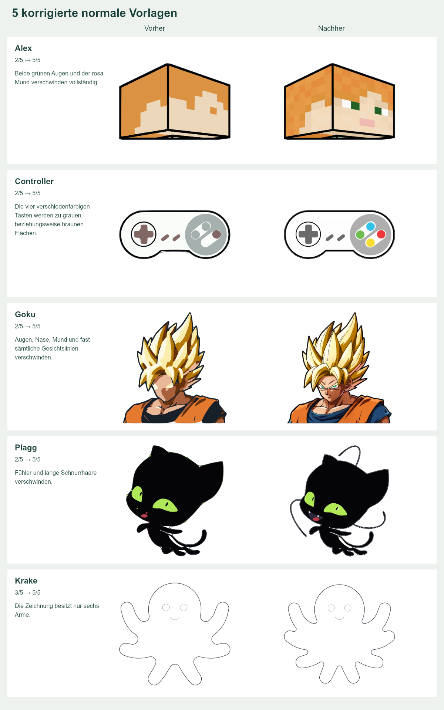
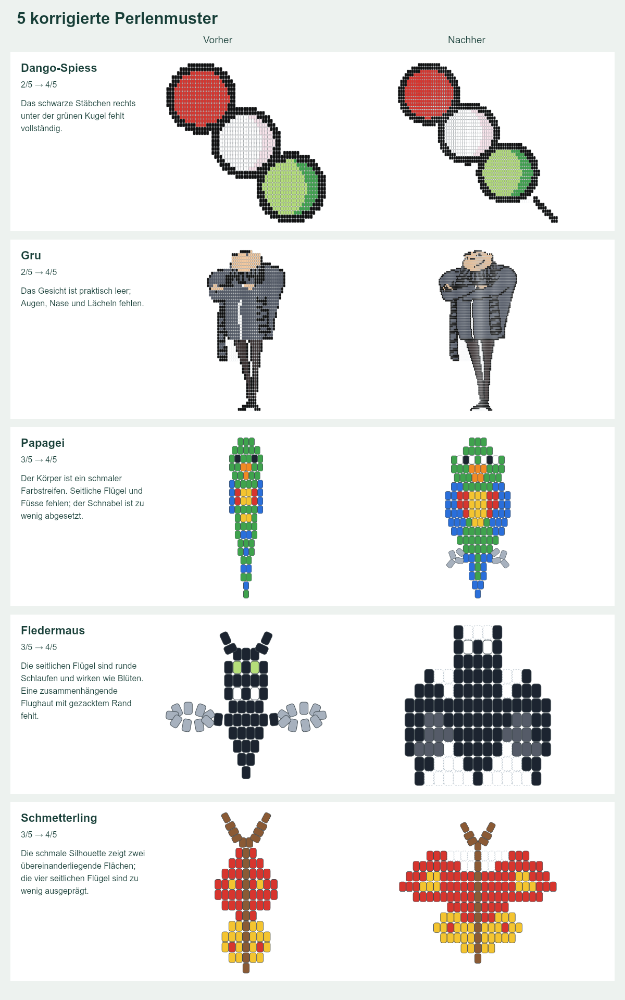

SCHRITTLI · PRÜFUNG VOM 28. OKTOBER 2026
Alle 783 Vorlagen durchgearbeitet.
Zuerst die normalen Vorlagen, danach sämtliche Perlenmuster. Jede Vorlage ist bewertet. Bei Abweichungen zeigen die Einzelberichte den Befund, die Korrektur und den Vergleich vorher/nachher.
440
Normale Vorlagen
302 Bildmotive und 138 gezeichnete Formen. 198 konkrete Befunde behoben. Alle Farbvorlagen verwenden die verlustfreien, bereinigten Originale. Die Krake hat nun acht Arme.
Alle normalen Vorlagen ansehen343
Perlenmuster
302 Figuren und 41 einfache Muster. 48 Muster korrigiert. Jede Änderung ist mit neuer Perlenzahl, Farbfolge je Reihe und gegebenenfalls Seitenteilen dokumentiert.
Alle Perlenmuster ansehenPrüfstand vom 28. Oktober 2026. Die Einzelberichte verlinken direkt auf die zugehörigen korrigierten Vorlagen.
Was geprüft wurde und wo die Grenzen liegen
Alle Bildmotive wurden visuell mit den vorhandenen Originalgrafiken verglichen. Die eigenen gezeichneten Formen und einfachen Perlenmuster haben keine unabhängige Referenz; hier wurden Erkennbarkeit und typische Merkmale geprüft.
Technisch bestanden: 440 normale Vorlagen in 1’770 Varianten; verlustfreier Farbvergleich aller 302 Bildmotive; alle 343 Perlenmuster mit Farbpalette, Geometrie, Druck in drei Perlengrössen und Editoränderungen. Im Browser wurden 645 Perlen-Druckseiten erzeugt und Editor, Speicherung, Versionsschutz und Berichte geprüft.
Die Farbtreue der normalen Vorlagen ist gesichert; Innenlinien bleiben vereinfacht. Grosse Perlenfiguren sind flache Muster und benötigen teilweise mehrere Tausend Perlen. Feine Gesichtslinien, Schrift und Schattierungen bleiben vereinfacht. Es gab keine praktische Fädel- oder Bastelprobe.
Prüfergebnisse als JSONZehn Beispiele vorher/nachher
Links der vorherige Stand, rechts die korrigierte Fassung. In den vollständigen Berichten steht zusätzlich das jeweilige Originalbild.

